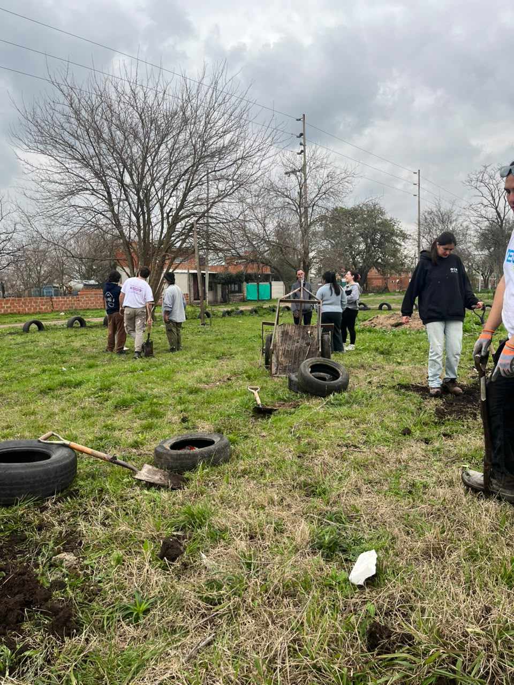
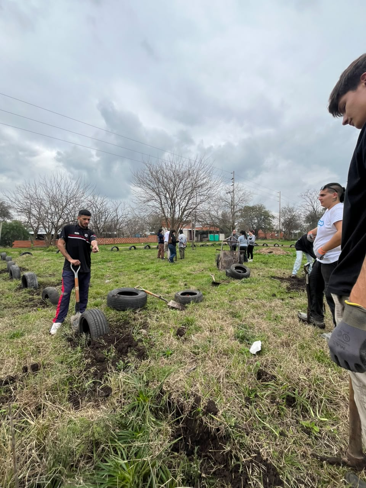
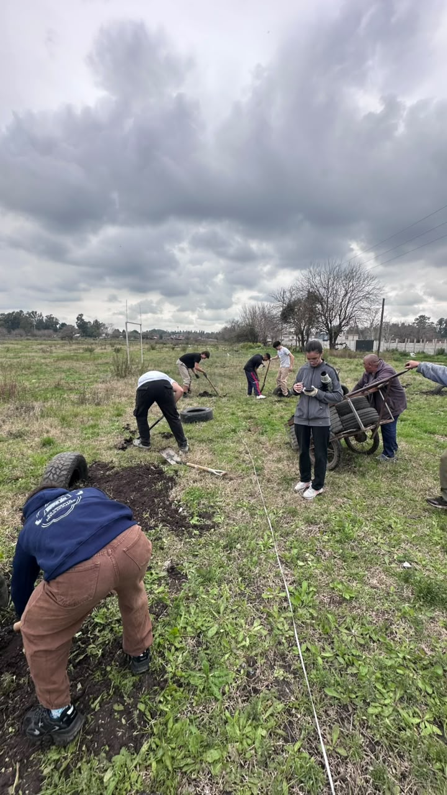
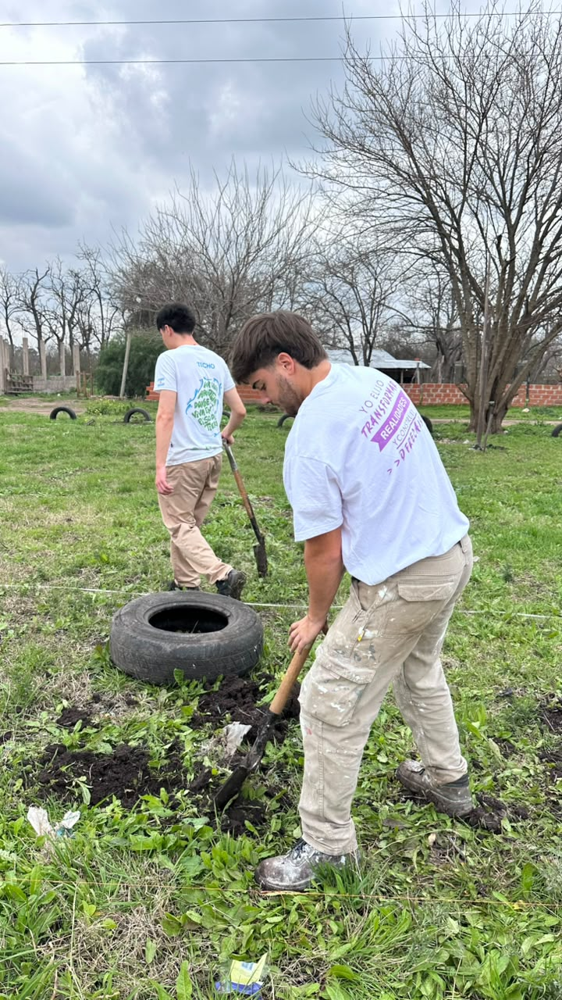
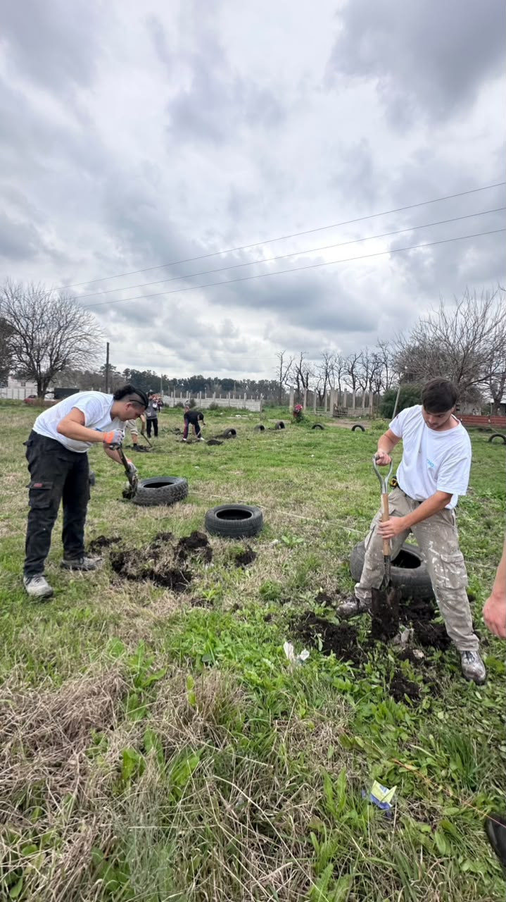
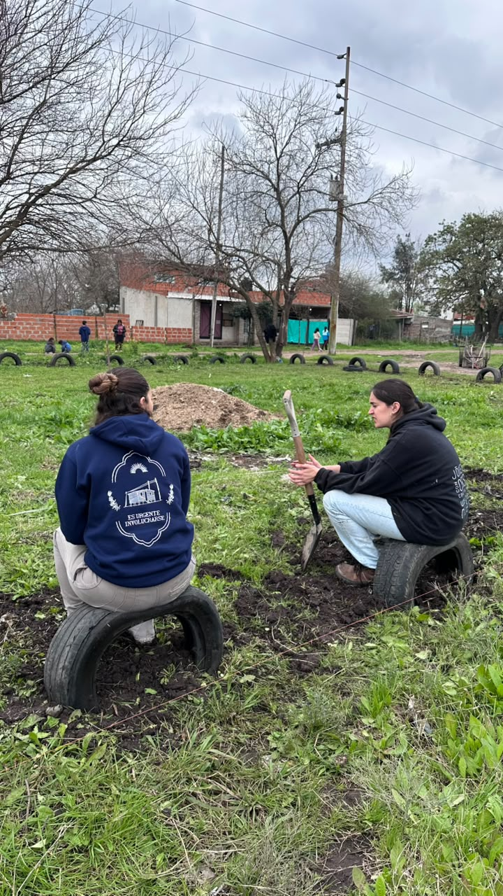

Espacio recreativo con neumáticos
En esta jornada armamos un espacio recreativo para el barrio utilizando neumáticos en desuso. Cavamos pozos para enterrarlos parcialmente y así delimitar sectores de juego y recreación, aprovechando materiales reciclados para generar un espacio comunitario a bajo costo.
Fotos





